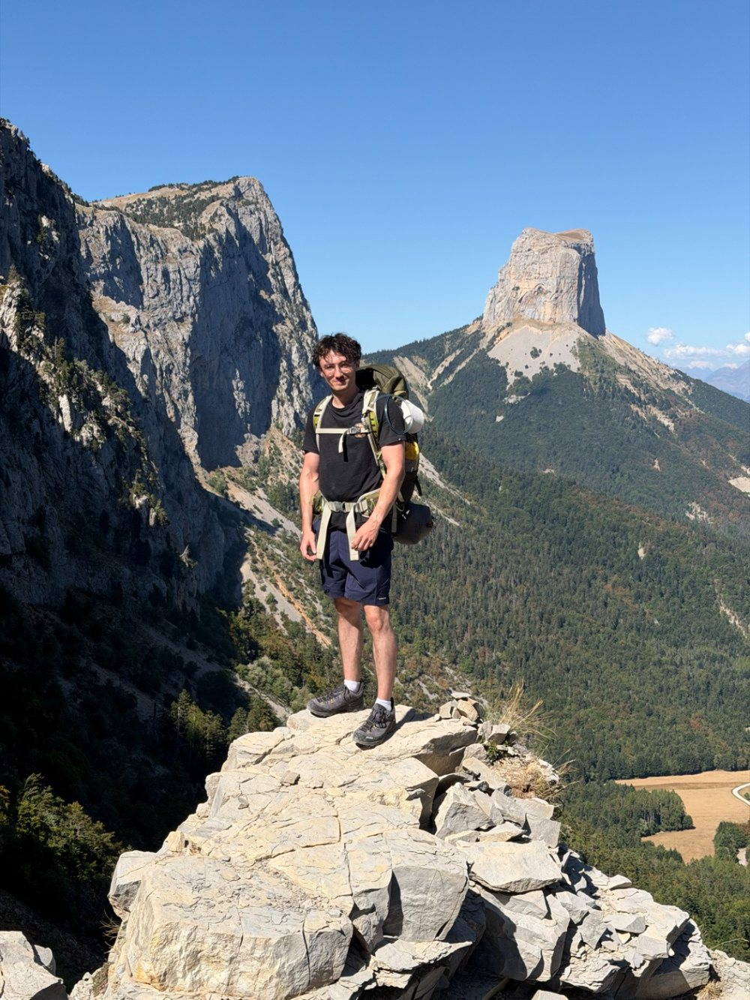

Machine Learning
Deep learning end-to-end in PyTorch: training from scratch, fine-tuning foundation models, and making them interpretable.
Research Engineer · BioAI · InstaDeep
Hi! I’m a robotics and control engineer by training, and today I work where deep learning meets biology.
At InstaDeep’s BioAI team, I spend most of my time on protein binding: I fine-tune protein-folding models to predict binding affinity, then dig into what they’ve learned to understand how a single mutation can change a protein. On the side, I’m running an experiment I’m really excited about: handing Claude an inverse-folding project to run entirely on its own, to find out how close an AI agent can get to being a full-time research colleague.
Before InstaDeep, I led an R&D team at HeadMind Partners working on generative image models, action recognition and object segmentation, and built data platforms for industry clients. My path has taken me from Paris to Madrid and back, and from classical mechanics to computer vision to proteins. I love diving into a new field and learning it from the ground up.
When I’m away from my desk, I’m probably doing calisthenics, climbing, hiking (that’s me in the Vercors), or cooking for friends. I studied neuroscience at CentraleSupélec and online, and space has fascinated me for as long as I can remember. I’m always happy to chat about either.

Deep learning end-to-end in PyTorch: training from scratch, fine-tuning foundation models, and making them interpretable.
Binding-affinity prediction, protein folding, mutation effects and T-cell receptor binding.
I studied neuroscience at CentraleSupélec and online, and keep a long-standing interest in astrophysics and how the brain computes.
BioAI department
Master’s thesis
Research themes from my current role, alongside open-source projects from my GitHub.
Main research · InstaDeep
Fine-tuning protein-folding models to predict binding affinity: modifying their architecture and shifting their confidence-score distributions toward enhanced mutants.
Side project · InstaDeep
Pushing Claude to run an inverse-folding project on its own, from training models from scratch to proposing mutants, to see if an AI agent can work like a full-time employee.
Research · InstaDeep
Probing how models represent near-identical sequences, to find the single point mutations that matter.
Open source · Python
An interactive Streamlit app that animates classic graph search algorithms — BFS and DFS, with A* and Dijkstra on the way.
Open source · Python
A web app that optimally assigns trainee magistrates to courts, balancing their ranked wishes against real-world constraints — with validation, analytics and visual results.
Open source · Jupyter
Recovering the app analytics data Apple’s API doesn’t expose, by automating App Store Connect with Selenium.
Computer vision · ROADIS
Algorithms that estimate inter-vehicle distances from traffic video to flag hazardous situations.
Venture · 2025
Co-founded an attempt at a conversational voice companion to keep senior citizens connected and less alone.
General Engineering degree, specialisation in Control Engineering. Mathematics, algorithmics, statistics & optimisation, neuroscience.
Master in Robotics & Automation, double degree with CentraleSupélec. AI, computer vision, non-linear problem solving, robot control.
Classe préparatoire aux grandes écoles — fundamental mathematics, physics and algorithms.
Get in touch
Open to conversations about protein ML, research collaborations and new opportunities.